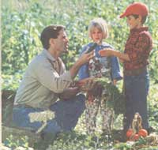
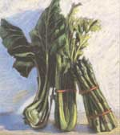
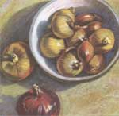
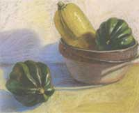
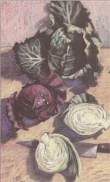

FALL HARVEST & STORAGE
Which vegetable stores well? Where? For how long? MortMather sorts out the details in part one of our HarvestSpecial.
I am continually amazed at all the things that go on in avegetable garden. Each year is different - changed by theweather, by my own "experiments" with fertility, by the varietiesI grow, and perhaps by my attitude. Each vegetable is differentin color, size, shape, taste, growing characteristics. Takestorage characteristics, for example. There are some vegetablesthat can't be stored while others can be thrown in a corner andstay wonderful for six months. Go figure.
I grew up with my mother telling me there was no such word as"can't," so I better fix that. You can store lettuce by dryingit. I just don't know what to do with dried lettuce. Smoke it?After more than 20 years of harvest success and failure, bountyand boondoggle, I've planted just about everything that I thoughthad a fighting chance in our northern climate, and the list thatfollows, though not absolutely comprehensive, provides abird's-eye view of how your produce should be doing at the end ofthe season, as well as some storage secrets that will keep asteady supply of it on your dinner plates through the year.
LETTUCE
There are a number of vegetables that I don't store any longerthan they will keep in the refrigerator. Lettuce is one of these,but I love lettuce so I want to have it fresh from the garden foras long as possible. I extend the season in the spring bystarting seedlings in the house. The first lettuce fromtransplants will reach the table in mid-June. That planting willhave pretty much gone by in a month, which is when the secondplanting, planted from seed in mid-May, should be ready forharvest. Plantings in mid-June, mid-July and mid-August will keepthe lettuce coming until November. We have even had lettuce fromthe garden on the Thanksgiving table. People in more southernclimates may not think that is much of a feat, but our first fallfrost comes around September 20.
Lettuce is not killed by early frosts because the cell wallsare more elastic than most vegetables. When the water within thecells expands as it freezes, the cell walls expand also. Tendercrops like cucumbers die at the first light frost because theircell walls burst.
KALE, KOHLRABI, RADISH & TURNIP
Kale is another hardy vegetable that we don't store. It iswonderful in soups. I like it steamed and seasoned with vinegar.This is the way I like spinach also. Spinach in the spring andkale in the fall is the way I like it. I just don't care for kalewell enough to want it around a lot. It will last longer in thefall than lettuce and it seems to get better after a frost. Ican't tell you how long kale will last because the deer alwayscut the season short for me. One of these years I will keep themout of the fall garden.
Kohlrabi, radish, and turnip are delightful in summer salads.I can eat any of these right in the garden after wiping the soiloff on my jeans. Radishes grow so fast that I can't keep up withsuccession planting to keep new ones coming. We eat them freshfrom the garden as soon as the first ones get a little largerthan peas. I always plant radishes with parsnips, carrots, andparsley. The radishes mark the row and shelter theslow-to-germinate crops. When the later crops need the space, Iharvest all the radishes to make room. That may mean I've gotfive pounds of radishes. They keep quite well for up to a monthif topped, washed, and put in a plastic bag in therefrigerator.
Sometimes, just to show off, I grow king-size radishes. Theyare regular radishes, cherry bell is my favorite, but when grownin good soil and mulched they can get almost as big as tennisballs. It's no big deal to grow them that large. The big deal iswhen someone eats one expecting it to be pithy or woody andfinding it to have a perfect texture and superb taste. The mulchassures stable moisture and keeps the soil temperature fromfluctuating as much as it would otherwise. The results are reallyspecial.
We don't store kohlrabi, radishes, or turnips as a rule.Kohlrabi can be pickled. Daikon radishes and rutabagas provideradish and turnip flavor in the winter and store easily in theroot cellar.
ASPARAGUS & ZUCCHINI
There are two vegetables that I really love in season,asparagus and zucchini. If spring is kind, I can eat my firstasparagus on my birthday, May 10. It is just great steamed withnothing on it, or with butter, or served with a little dressing.The harvest is only about a month long, but what a month that is.It is especially wonderful because it is the first fresh,home-grown green for many months. I don't crave asparagus untilsome time in April, which is just right. I have a month ofexpectation and a month of ecstasy. Asparagus can befrozen or canned but it's not anything that I will ever bemotivated to do.
Commercial growers harvest asparagus by cutting it off belowthe ground. I presume this is done to get more weight. They thenlet the ends dry out which makes them inedible. I cut the earlyasparagus below ground level because I want to get an extra biteor two from the first pickings. Later I will cut at ground levelor snap them off. When I bring the asparagus into the house Ibundle it together with two rubber bands. Then I cut the ends offand stand the asparagus in water in the refrigerator. This keepsit fresh until you eat it, and you won't wind up with anyinedible fibrous ends that way.
Zucchini grows so fast that once it starts coming in you haveto harvest it every other day. When I had a market garden andsupplied restaurants with zucchini, I harvested every day and ahalf to get perfectly sized vegetables. I think they are bestabout six inches long.
When I was a bachelor in New York City my favorite meal waslamb chops, baked potato, and zucchini. I was not cognizant ofseasons at that time in my life and bought my favorite vegetablein the winter when the price was notable. That is how I came tovalue zucchini. I don't even think I would like zucchini in thewinter now but when it is in season I revel in the bounty.
CELERY, EGGPLANT & PEPPER
There are three more vegetables in the we-don't-store-themcategory:
celery, eggplant, and pepper. We don't grow celery very oftenmainly because I am not geared up for starting seedlings inFebruary. Then they have to be taken care of until late Maybefore they can be put out in the garden and left on their own.Then they should be blanched or else they are too strong andstringy. Celery can be stored in the root cellar for two to threemonths, so the books say. That is an experience that still awaitsme.
Eggplant and pepper are not as bad as celery but they do needto be started indoors and cool summer weather can severely cutback the crop. Fans of dehydrating vegetables tout that method ofstoring these. We have stored them in ratatouille which we frozeor canned. We try to get an overdose while they are in season butthat isn't easy as there is so much coming from the garden at thesame time...like corn.
CORN
Corn! Ah, this is another ecstasy vegetable. We plant early,middle, and late season varieties to get continuous corn frommid-July to mid-September. I have been told that frozen corn onthe cob is as good as fresh, but I don't believe it. We have alot of unused freezer space and we haven't even bothered to tryit. Some say just put the ears in the freezer right from thegarden. Others say shuck them and put them in plastic bags.Others say shuck them and blanch them before putting them inplastic bags.
We stick with the old rule of getting the water boiling beforepicking the corn. If you drop one on the way in, don't stop topick it up. The sugar in corn does turn to starch but thetransformation doesn't begin immediately and it takes a day ormore to start to be noticeable. At least that is what I have readMe, I enjoy jogging in from the garden with an armload of freshlypicked corn.
Harvesting can be a little tricky because you can't see thekernels. The best indication is the drying or browning of thesilk. If you have raccoons, the corn will be ready to harvestabout three days after the coons start eating it. If you are intosharing, plant a lot. With luck, your generosity will be noticedby porcupines as well.
Our favorite method of preparing corn is to cook it in thehusk over coals. When the coals are ready I pick the corn and putit on the grill. The corn can actually go directly on the fire.The moisture in the husks keeps it from burning. Keep an eye onthe husks, turning frequently. When the husks get brown, beforethey start to burn, the corn will be done. Pull back the husks,this is a little hot on the fingers but it is a good time to showoff. Hand the ears around with the husk as handle. It cools inthe air shortly after you have burned your fingers. We serve thisoutside with a stick of butter to rub the corn across. Whenfinished, everyone gets to try their luck at lobbing the cob intothe compost bin.
Sweet corn can be frozen on or off the cob and canned. It canalso be dried. Of course, some corn is supposed to be dried.Popcorn needs to be dried but not too much because it is themoisture in the kernels that makes them pop when it expands. Welet popcorn dry on the stalk as long as possible, which usuallymeans until the birds get hungry. Then we pull the husks back,tie them in bundles, and hang them in a dry place for a fewweeks. Then the kernels are shelled off the cob and stored in anairtight jar so the drying is stopped.
Field or flint corn can't get too dry. We treat it the same aspopcorn except for the shelling which takes place later. If it isnot dry enough, it will gum up the grinder when you come togrind. We leave it hanging from the rafters until we are ready touse it or until we decide it is getting dusty.
You need a big garden to grow all these varieties of corn asthey all need to be separated during pollination. The separationcan be either space or time. The Handbook for VegetableGrowers by James Edward Knott (John Wiley & Sons, NewYork) says that different varieties of corn should be planted amile apart. As long as you are growing for your own table and notto sell seed you can gamble on opposite corners of the garden. Ifthere is some cross pollination it will most likely result inpartially filled ears or skipped rows of kernels.
A Storer's Hall of Fame:
ONIONS
The opposite end of the storability scale from lettuce has gotto be onions. The rules for onions are: don't let them freeze,don't store them wet or in a wet place, and don't store rottenones. Accomplishing this is just too easy. First, when
onions are ready to be harvested, they lie down so there is notrick to knowing when to harvest (By the way, you can harvest anonion any time you feel like it during the season). You canharvest the onions for storage any time after they lie down andbefore a hard frost. They won't rot, get eaten by anything, orlose flavor or quality in anyway. When I get around to it I pullall the onions and drop them right there in the row. They can lieon top of the ground like this for a casual period of time unlessfrost threatens. They can also be rained upon, which will cleanthem up a bit, as well as stand full sun. The idea is to let themdry and cure a bit. The soil that may have come up with theirroots will fall off.
Not all of the onions will lie down at the same time, so youmay have some with practically dry tops and others that stillhave green tops. If you can't leave them in the garden until allthe tops are dry, you can move them to a porch or some other dryplace where they can be spread out to finish the dryingprocess.
The final step is to pick each one up by hand and feel itwhile putting it in an onion bag or a basket or whatever. My"feeling it" is really just giving it a squeeze designed to pulloff dirt and perhaps the outer skin. It is all accomplished inthe time it takes to pick up an onion and transfer it to the bagor basket. I'm not trying to make them picture-book clean. MostlyI want to be sure there are no soft ones. A soft onion is arotten onion and you don't want any of them in storage.
There are invariably some thick-neck onions. These are setaside for early use. I can taste onion soup as I write this.
The ideal temperature for storing onions is just abovefreezing. In our house the closest space for that temperature isthe front hall. It is unheated. Cold outside air comes in aroundthe door and warmer air rises to the second floor to keep it acold but above-freezing place. But don't fret about finding theperfect place. We sometimes braid onions and hang them from therafters in the kitchen. I don't think there is a warmer place inour house. These onions sprout earlier than onions in a basket onthe floor but they still last through March. It's a good idea tocheck through a bag or basket once a month or so just in case apoor-quality onion got stored by mistake. However, if your noseis working you can probably rely on it to tip you off to apotential problem.
SQUASH & PUMPKINS
Winter squash and pumpkins are even easier. When the firstfrost hits,
the leaves of these vine crops die, leaving them exposed andeasy to find. Cut or twist them off the vine leaving the stemattached to the fruit. I have read various things about curingthese vegetables on the sun porch or next to the wood stove. I'veeven followed those directions once or twice. It may make adifference but none that I've ever seen.
They can be stored just about anywhere in your living space.The optimum temperature is right around 60°F.We have storedthem on the kitchen floor, on shelves, and under the bed. We havebeen notified of squash rotting by fruit flies. Larger pumpkinsand larger squash will last up to six months, but you might wantto keep a close eye on the smaller ones after three months. Theycan go from a soft spot to mush pretty fast.
ROOT CROPS
Root crops need a humid atmosphere. They also like to be ascold as possible without freezing. Our cellar with a dirt floorand water running through it was ideal until we put in a furnace.I've been trying to bring it back to the good old days eversince. This year I walled off a section, but if it is still toowarm, I may try fooling around with fans and thermostats.
The ideal storage place for root crops is right where theygrew. The is fine for parsnips which can freeze without burstingtheir cell walls. I don't know if parsnips belong in thisgrouping or if they should be classified as one of the vegetableswe eat straight from the garden. They can be eaten in the fallbut we never do. They are the first garden vegetable eaten fromthe garden in the spring. I have bent spading forks trying to getthem out of the ground before the frost freed them.
Carrots, beets, potatoes, daikon radish, and rutabaga will rotif frozen. They can be protected from freezing by insulating themfrom the winter cold, and this can be done by covering them withenough hay to keep the ground from freezing. That takes a lot ofhay, however. In our climate I need to use a whole bale thicknessand the cover has to extend about eight inches from crops to keepthe frost from coming in under the bales. I usually use thismethod for carrots, as I like them best and appreciate solidcarrots especially in late winter. I try to get a couple of rowsof carrots growing close together and reaching peak maturity inSeptember. If I put the bales on too soon, rodents may move in.Too late, and the carrots freeze and are lost.
I wrote about root storage in the March issue. As with so muchof gardening, there are a lot of different ways to get goodresults, from a hole in the ground to a humidity-controlledwalk-in refrigerator. I like to eat low on the tech and energyhog. I also like to make things as easy as possible. I do most ofmy storage in wooden bins that are kept off the dirt floor of ourcellar by resting on rocks.
CABBAGE
Cabbage is the transition vegetable from unprocessed storageto processed. Winter cabbage will last three to four months incold high humidity, just the same as root crops. The only realdifference is that root crops usually lose their goodness bygetting dry and limp. Cabbage usually rots. Therefore, you don'twant to fill a box with cabbage in your cellar and forget aboutit. Check your cabbage every now and then to make sure none arerotting, because if you don't discover it until you can smell itin the house, you are not going to be living with happy campersuntil the smell goes away. In fact, you may want to goaway.
The beauty of cabbage is that it is the only green vegetablethan can be stored for any length of time without beingprocessed. If you are trying to eat as much as possible from yourgarden, this is a very important feature. Lettuce from Junethrough November and coleslaw from November through Februarystill leaves four months with no fresh green vegetables. Thosefour months are the period of the year when a died-in-the-woolself-sufficient gardener is building an appreciation for freshvegetables. We process some vegetables to get through this periodwithout feeling deprived. Cabbage is one of the vegetables weprocess.
Old-Fashioned Fermenting
Our first adventure into making sauerkraut lives on in ourmemories, especially Barbara's. Kraut is made with late cabbageand sea or pickling salt. That's it. On a beautiful crisp fallday I brought some firm heads of late cabbage in from the garden.The outer leaves had been eaten by cabbage worms but the headslooked great after the eaten leaves were removed. I quartered thecabbages and cut out the core. Barbara shredded them. I weighedthe shredded cabbage and when I had five pounds I mixed it withthree tablespoons of salt and let it sit for 10 or 15 minutes.Then I packed the cabbage into a large crock.
It was a lovely old crock which weighed probably 25 pounds andstood almost two feet high. We were going to have a lot ofsauerkraut to go with the pork we were also raising thatyear.
Barbara kept shredding and I kept mixing and packing, makingsure all the air was forced out of the kraut without breaking theshredded cabbage. When the kraut was up to about six inches fromthe top I covered it with cheesecloth. I had made a disk of oakthat just fit into the crock. The idea was to hold down thecheesecloth so the brine that would form as the cabbage fermentedwould come up over the cover and seal off the kraut from the air.A rock on top of the oak finished the job.
The crock was placed on the floor on the high end of ourkitchen. I should explain that our house is 200 years old andthere is not a level floor or square corner in it. The high endwas farthest from the woodburning kitchen range which we wereusing at the time. We thought that was the best place to find a70°F temperature.
In two days the brine was covering the oak disk. When scumformed on the brine we were to lift off the rock and disk andcloth and skim off any of the white scum that did not adhere tothe cloth, then replace the cloth with a clean one, scald the lidand weight, and replace them. I did this the first time it neededto be done but then, as fate would have it, I got a job thatcalled me away for a week. I left Barbara in charge of thesauerkraut scum skimming operation. That's Hollywood.
It didn't go well. First, I had neglected to tell her that thetop of the crock was not a perfect circle, nor was the handmadedisk. The disk would only fit a certain way. Second, sheneglected to notice that the cheesecloth was tucked downaround the kraut, not around the disk. When she tried toreassemble the cover it wouldn't fit into the crock. As she triedto make it fit, the crock split open, flooding her feet in brine.The brine continued to run across the kitchen floor until itpuddled at the low end of the kitchen. Did I mention thatlightning came into the house and melted a burner on the stoveand that the dog had an epileptic fit that week? Oh yeah, Barbarawas very pregnant, too. As you might imagine, sauerkraut has aspecial meaning for us.
While sauerkraut making may seem like pickling, it isn't,because it uses only salt. It is not salting either, which is amethod of food storage that is not used much at all today. Thereason salting is not used is that the salt has to be washed offbefore the vegetable so stored can be used and much of thenutrient value of the vegetables goes with the salt. We havesalted one vegetable, parsley. The leaves are chopped and packedin salt in a small jar similarly to the cabbage in kraut making.The salt keeps the leaves green and, since parsley is used as aseasoning and usually at the same time as salt, the saltedparsley is used in place of salt when both are desired. Anotherway to keep parsley around is to grow it in a pot as a houseplant.
And what is sauerkraut if it is not salted or pickled? It isfermented.
Pickling
Pickling uses salt and vinegar with spices and herbs. A numberof vegetables can be pickled, the most obvious being cucumbers.Green beans pickled with dill and hot pepper is a favorite ofmine. Green cherry tomatoes are another. Pickling is more funthan any other vegetable processing because you can be creative.It is not just a matter of getting things clean and temperaturesright.
In the days before generally available processed foods onsupermarket shelves, when most households had shelves ofhome-canned food as well as a full root cellar, pickles were themost frequently given or swapped vegetable. Storage of all theother vegetables was pretty straight forward. Everybody did itabout the same way with the same results. Pickles were the itemsin which experimentation might bring forth a special product.Think of the subtle flavors of cloves, turmeric, mustard seed,dry mustard, celery seed, cinnamon, allspice, honey, maple syrup,brown sugar, white sugar, ginger, nutmeg, white peppercorns,black peppercorns, horseradish, garlic, saccharin, curry powder,bay leaf, hot peppers, hot pepper pods, cayenne pepper, mace, anddill. Perhaps I should say, "Think of them as subtleflavors." They can all be used in varying amounts in makingpickles; pickling such fresh-from-the-garden vegetables ascucumbers, onions, cauliflower, green peppers, red peppers, greenbeans, wax beans, green tomatoes, corn, cabbage, beets, zucchini,and horseradish. A grape leaf stuck in each jar of pickles beforesealing will help keep them crisp.
Canning
There are two processes we use to store food from the garden:canning and freezing. They both require energy, as in a stove andfreezer, which causes them to have an expense that other storagemethods don't have. Vegetables do lose some goodness inprocessing which is why we put it at the bottom of our list ofstorage methods. Before I go on I should say that we process ourpickles. It wasn't done in olden days but using a boiling waterbath stops bacteria that can work in an acidic environment andcause spoilage. It also stops enzyme action and insures a goodseal on the canning jars.
We only can one vegetable other than the pickles which arepickled and canned. That is tomatoes. The story of ourfirst experience with canning tomatoes is another memorablestory. But before I get started, turn to Deanna Kawatski's guideto canning for a complete list of materials and instructions.
It was a beautiful fall day, the most wonderful time of theyear in Maine. The kitchen floor was crowded with vegetables thathad been brought in the night before as our first hard frost wassure. A couple of bushels of ripe tomatoes were joined by abushel of green tomatoes, pumpkins, winter squash, and onions.The tomatoes were to be dealt with on this fine day. With thebook propped up over the sink, Barbara and her assistant, me,began to learn a new skill, food processing.
We assembled all the equipment: canning jars, canner, assortedpots, knives, jar lifters, pot holders. The top of the stove wasfilled with the canner and pots all filled with water and beingbrought to a boil. Cleanliness is given such emphasis in mostbooks that the novice is sure to get the entire kitchen close tooperating room condition. Heaven forbid an enzyme shouldsurvive.
The tomatoes are washed; I did that. Then they are dipped inboiling water for half a minute or so. This is called scalding.It loosens the skin so it slips off easily. I did that, too,while Barbara read ahead and supervised so that everything wouldcontinue apace. As I dropped the peeled tomatoes into a bowlBarbara took them out and cut and packed them into the canningjars. Then she ran a knife around inside the jar to liberate anyair bubbles. The tomatoes were packed to about half an inch ofthe top. She wiped the rim of the jar to make sure it was cleanand smooth so the top would seal properly and placed the lid onloosely as directed.
"It says to cover the jars with half and inch of water," shesaid. "Won't the water get into the jars?"
What did I know, but being a man and being asked a question, Ifelt I had to come up with an answer. "Guess not. If that's whatthe book says." By this time the kitchen was so full of steamthat we could barely see each other. Barbara put the jars intothe boiling water of the tanner and proceeded to add more boilingwater to cover the tops. The kitchen had become unbearably hot,especially with my hands full of scalding tomatoes, so I opened awindow. Cold air swirled into the room. As the dew point droppedand the moisture-laden air condensed into drops of water notunlike rain, Barbara could see through the fog that the jars wereindeed filling with water from the canner. This precipitatedanother shower in the kitchen, this time of tears.
We have told the kraut and canning stories many times in thehope that they amuse and that they help others to go forwardbravely to learn new things. Doing something for the first timeis usually a bit stressful. After each misadventure I think webecome a little more philosophical. After all, it wasn't the endof the world. It wasn't a waste of tomatoes either. Nor was it awaste of time, because we learned something.
What did we learn about the water getting into the jars? I'mstill a bit puzzled because we have checked many books since andthey all say the same thing. Perhaps we were going too slowly andthe inside of the jar had cooled too much and in came the water.Deanna will fill in the details.
Freezing
We freeze peas, spinach, green beans, and broccoli. We havefrozen brussels sprouts and cauliflower but our taste forbrussels sprouts can generally be fulfilled by eating them inseason. Their season is October through December if I can protectthem from the deer. We are not big fans of cooked cauliflower soit is usually a fresh-from-the-garden vegetable with only about amonthlong season in late spring.
Freezing is really pretty easy. Pick the vegetables when theyare at their peak and process them as soon as possible. For peasand beans this may mean planting more than you will use so thatyou have enough in a single picking to process. These twovegetables produce over a two-week season. A 25-foot row providesenough in one picking to make it worthwhile to freeze. Over thetwo-week period the 25-foot row will produce two or three timesas much as we can or want to eat, however. We could plant shorterrows and hold the peas in the refrigerator while enoughaccumulate to process but they will not be as good as they canbe.
Spinach is very cooperative. When it reaches its peak you wantto move fairly fast as it won't be long before it bolts.
The actual "processing" in freezing takes place in thefreezer. I mentioned people telling me they had success freezingcorn on the cob doing no more than putting it in the freezer. Ibelieve them. The preparation before putting the vegetables inthe freezer is solely for the purpose of getting rid of enzymesthat will cause the vegetable to deteriorate. Maybe if vegetablesare frozen directly from the garden, the enzymes don't have timeto get involved.
We prepare vegetables for freezing first by preparing themjust as we would for cooking: popping, washing, cutting, orwhatever, depending on the vegetable. Then we put them in astrainer that can be placed in a pot of boiling water. We haveplenty of ice to keep ice water good and cold. We plunge theveggies into boiling water, which is called blanching, for aminute or two. The books say longer. Then we lift the strainerwith the vegetables out of the hot water and plunge them into icewater for another couple of minutes. It sounds like a Swedishbath, doesn't it? Then the vegetables are dried on a towel andput into a freezer container of some kind and put in the freezer.They are spread out in the freezer so they will freeze quickly.That's, it.
When we are ready to eat frozen vegetables they go directlyfrom the freezer to the stove top. In a few minutes they areready, having lost very little garden goodness in theprocess.
I have not covered drying. We have done very little of it. Imentioned corn for cornmeal and popcorn. Dry beans and peas arealso pretty easy. We usually have some of both in the gardenbecause I am not diligent in cleaning up garden plants when theygo by If left alone the plants will dry and the pods left at theend of the season will dry along with the vines. These can beharvested, shaken or popped from the pods, and stored in jars.The peas should be split and the husks blown away leaving splitpeas for soup. I haven't done this so I'm going to leave you toyour own theories on how best to do it.
Barbara dries herbs by collecting them at their peak, beforeflower, and hanging them from the kitchen ceiling. Once dry shecrumbles them into various jars and cans she has collected overthe years for the purpose.
For More Information
Battered and splattered books we have used over the years arePutting Food By by Ruth Hertzberg, Beatrice Vaughan, andJanet Greene (Stephen Greene Press, Brattleboro, VT); Keepingthe Harvest by Nancy Thurber & Gretchen Mead (Garden WayPublishing, Charlotte, VT); Stocking Up, edited by CarolStoner (Rodale Press, Emmaus, PA); Joy ofCooking by Irma Rombauer and Marion Rombauer Becker(N.A.L. Dutton, New York); and Ball Blue Book (BallBrothers Co., Muncie, IN).
Each garden brings new successes and unexpected events thatare not always wonderful. In all my years of gardening I havenever ended a growing season feeling that there were nochallenges left. There was even a year when I had a full-scalezucchini failure, so even us experts are occasionally caught withour pants down.
|
 |
 |
 |
|
 |
 |
|